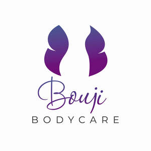

Trade Mark Journal No.2025/052 26 December 2025
UK00004273863 6 October 2025 (3,35,44)

- Class 3
- Cosmetics; Skincare cosmetics; Moisturisers [cosmetics]; Cosmetics and cosmetic preparations; Hair cosmetics; Skin fresheners [cosmetics]; Cosmetics for eye-lashes; Cosmetics for suntanning; Anti-aging moisturizers used as cosmetics; Organic cosmetics; Non-medicated cosmetics; Skin moisturizers used as cosmetics; Lip cosmetics; Natural cosmetics; Mousses [cosmetics]; Cosmetics preparations; Cosmetics in the form of lotions; Colour cosmetics; Beauty care cosmetics; Facial creams [cosmetics]; Suncare lotions [for cosmetic use]; Cosmetics for animals; Decorative cosmetics; Eyebrow cosmetics; Multifunctional cosmetics; Eye cosmetics; Milks [cosmetics]; Body creams [cosmetics]; After-sun oils [cosmetics]; Skin masks [cosmetics]; Functional cosmetics; Facial gels [cosmetics]; Suntan oils [cosmetics]; Skin care cosmetics; Suntan lotion [cosmetics]; Cosmetics for children; Fluid creams [cosmetics]; Non-medicated cosmetics and toiletry preparations; Humectant preparations [cosmetics]; Emollient preparations [cosmetics]; Cosmetics in the form of creams; Powder compacts [cosmetics]; Sun-tanning preparations [cosmetics]; Cosmetic hair lotions; Suntanning oil [cosmetics]; After-sun milk [cosmetics]; Colour cosmetics for the skin; After-sun milks [cosmetics]; Cosmetics for use on the skin; Cosmetic moisturisers; Sunscreens [for cosmetic use]; Cosmetic creams and lotions; Bath powder [cosmetics]; Night creams [cosmetics]; Skin recovery creams [cosmetics]; Sun blocking lipsticks [cosmetics]; Body gels [cosmetics]; Cosmetics for the use on the hair; Cosmetic products in the form of aerosols for skincare; Body and facial creams [cosmetics]; Lip stains [cosmetics]; Sunscreen [for cosmetic use]; Sunscreen creams [for cosmetic use]; Creams (Cosmetic -); Cosmetic creams; Body care cosmetics; Cosmetic soaps; Cosmetics containing keratin; Cosmetics in the form of powders; Cosmetic skin fresheners; Hair care lotions [for cosmetic use]; Dyes (Cosmetic -); Cosmetic dyes; Cosmetics containing panthenol; After-sun lotions [for cosmetic use]; Cosmetics in the form of oils; Beauty lotions; Cosmetic facial lotions; Facial lotions [cosmetic]; Cosmetic suntan lotions; Perfume oils for the manufacture of cosmetic preparations; Colour cosmetics for children; Skin care lotions [cosmetic]; Nail hardeners [cosmetics]; Tissues impregnated with cosmetics; Anti-aging creams [for cosmetic use]; Nail tips [cosmetics]; Nail primer [cosmetics]; Sun protecting creams [cosmetics]; Cosmetic products for the shower; Smoothing emulsions [cosmetics]; Anti-ageing creams [for cosmetic use]; Perfumed powders [for cosmetic use]; Skin cleansers [cosmetic]; Liners [cosmetics] for the eyes; Moisturising skin lotions [cosmetic]; Skin creams [cosmetic]; Cosmetic creams for the skin; Body and facial gels [cosmetics]; Skin creams [for cosmetic use].
- Class 35
- Marketing research in the fields of cosmetics, perfumery and beauty products.
- Class 44
- Cosmetic body care services; Cosmetics consultancy services; Consultancy services relating to health care; Consultancy in the field of body and beauty care; Consultancy services relating to cosmetics; Beauty consultancy services; Cosmetic body care services provided by health spas; Skin care salon services; Beauty care services; Advisory services relating to beauty care; Consulting services relating to health care; Services for the care of the hair; Hair care services; Advisory services relating to hair care; Advisory services relating to health care; Advisory services relating to cosmetics; Hygienic and beauty care services; Consultation services relating to beauty care; Consultancy services relating to beauty; Consultancy relating to health care; Services for the care of the scalp; Health spa services; Provision of hygienic and beauty care services; Cosmetic make-up services; Home health care services; Services for the care of the face; Provision of health care services; Nail care services; Consultancy provided via the Internet in the field of body and beauty care; Beauty advisory services; Cosmetic treatment services for the body, face and hair; Consultancy services relating to nutrition; Advisory services relating to beauty treatment; Consultancy and information services relating to medical products; Health consultancy; Mobile dental care services; Medical services for treatment of the skin; Haircare services; Consultancy and information services relating to pharmaceutical products; Beauty consultation services; Medical spa services; Beauty treatment services; Cosmetician services; Services for the care of the feet; Healthcare advisory services; Advisory services relating to health; Beauty spa services; Health clinic services [medical]; Beauty therapy services; Facial beauty treatment services; Human healthcare services.
Balanced Bodycare Ltd